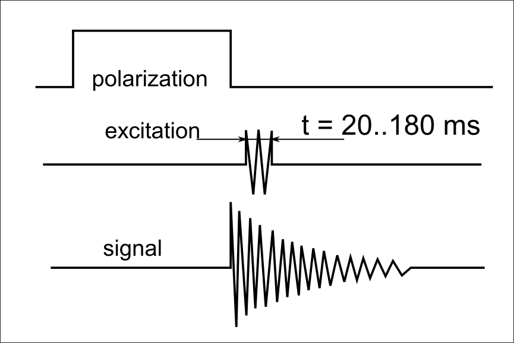
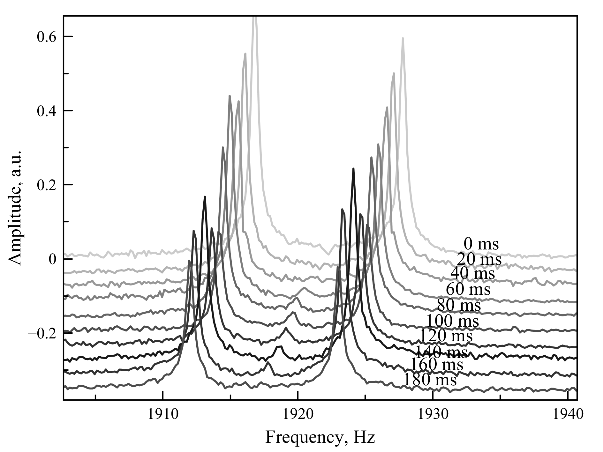
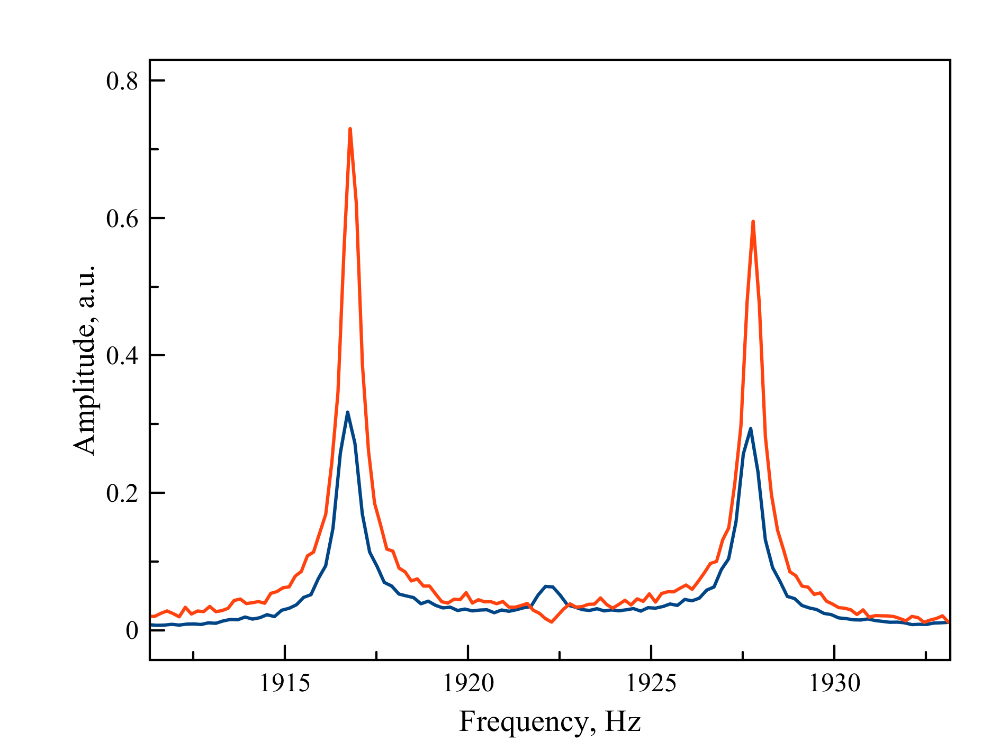

Регистрация ЯМР в земном поле (1922 Гц). Образец - триметилфосфал 130 мл. Поляризация ~100 Гс в течение 5с. Быстрое выключение поляризации. Подача возбуждающего импульса на частоте ядер фосфора (730 Гц) Схема эксперимента:

При изменении длительности возбуждающего импульса наблюдалась следующая картина:

Максимальная амплитуда линии нерасщеплённых протонов наблюдалась при длительности импульса 120 мс
